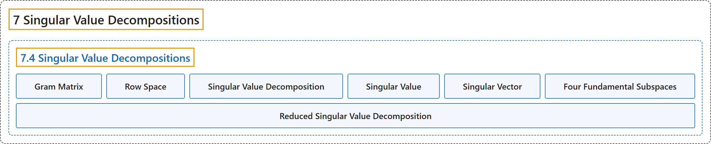

7.4 Singular Value Decompositions
Classification

Glossary
| Term | Definition | 中文翻译 | Source |
|---|---|---|---|
| 7.4 Singular Value Decompositions 奇异值分解 |
(No definition) | （无定义） | Austin, 2023, section 7.4 |
| Gram Matrix 格拉姆矩阵 |
"We call \(G=A^TA\), the Gram matrix associated to \(A\) and note that \(l_A(\mathbf{x}) = \sqrt{q_G(\mathbf{x})}\)." | 我们称 \(G=A^TA\) 为与 \(A\) 相关的格拉姆矩阵，并注意到 \(l_A(\mathbf{x}) = \sqrt{q_G(\mathbf{x})}\)。 | Austin, 2023, section 7.4 |
| Row Space 行空间 |
"Because the columns of \(A^T\) are the rows of \(A\), this subspace is sometimes called the row space of \(A\) and denoted \(\text{Row}(A)\)." | 由于 \(A^T\) 的列就是 \(A\) 的行，这个子空间有时称为 \(A\) 的行空间，记作 \(\text{Row}(A)\)。 | Austin, 2023, section 7.4 |
| Singular Value Decomposition 奇异值分解 |
"An \(m\times n\) matrix \(A\) may be written as \(A=U\Sigma V^T\) where \(U\) is an orthogonal \(m\times m\) matrix, \(V\) is an orthogonal \(n\times n\) matrix, and \(\Sigma\) is an \(m\times n\) matrix whose entries are zero except for the singular values of \(A\) which appear in decreasing order on the diagonal." | \(m\times n\) 矩阵 \(A\) 可以写成 \(A=U\Sigma V^T\)，其中 \(U\) 是 \(m\times m\) 正交矩阵，\(V\) 是 \(n\times n\) 正交矩阵，\(\Sigma\) 是 \(m\times n\) 矩阵，其元素除了按递减顺序排列在对角线上的 \(A\) 的奇异值外均为零。 | Austin, 2023, Theorem 7.4.8 |
| Singular Value 奇异值 |
"A general matrix, particularly a matrix that is not square, may not have eigenvalues and eigenvectors, but we can discover analogous features, called singular values and singular vectors, by studying a function somewhat similar to a quadratic form." | 一般矩阵，特别是非方阵，可能没有特征值和特征向量，但通过研究一个与二次型有些类似的函数，我们可以发现类似的特征，称为奇异值和奇异向量。 | Austin, 2023, section 7.4 |
| Singular Vector 奇异向量 |
"A general matrix, particularly a matrix that is not square, may not have eigenvalues and eigenvectors, but we can discover analogous features, called singular values and singular vectors, by studying a function somewhat similar to a quadratic form." | 一般矩阵，特别是非方阵，可能没有特征值和特征向量，但通过研究一个与二次型有些类似的函数，我们可以发现类似的特征，称为奇异值和奇异向量。 | Austin, 2023, section 7.4 |
| Four Fundamental Subspaces 四个基本子空间 |
"Considered altogether, the subspaces \(\text{Col}(A)\), \(\text{Nul}(A)\), \(\text{Col}(A^T)\), and \(\text{Nul}(A^T)\) are called the four fundamental subspaces associated to \(A\)." | 综合起来，子空间 \(\text{Col}(A)\)、\(\text{Nul}(A)\)、\(\text{Col}(A^T)\) 和 \(\text{Nul}(A^T)\) 称为与 \(A\) 相关的四个基本子空间。 | Austin, 2023, section 7.4 |
| Reduced Singular Value Decomposition 简化奇异值分解 |
"If \(A\) is an \(m\times n\) matrix having rank \(r\), then \(A=U_r \Sigma_r V_r^T\) where \(U_r\) is an \(m\times r\) matrix whose columns form an orthonormal basis for \(\text{Col}(A)\), \(\Sigma_r=\begin{bmatrix} \sigma_1 & 0 & \ldots & 0 \\ 0 & \sigma_2 & \ldots & 0 \\ \vdots & \vdots & \ddots & \vdots \\ 0 & 0 & 0 & \sigma_r \\ \end{bmatrix}\) is an \(r\times r\) diagonal, invertible matrix, and \(V_r\) is an \(n\times r\) matrix whose columns form an orthonormal basis for \(\text{Col}(A^T)\)." | 若 \(A\) 是秩为 \(r\) 的 \(m\times n\) 矩阵，则 \(A=U_r \Sigma_r V_r^T\)，其中 \(U_r\) 是 \(m\times r\) 矩阵，其各列构成 \(\text{Col}(A)\) 的标准正交基；\(\Sigma_r=\begin{bmatrix} \sigma_1 & 0 & \ldots & 0 \\ 0 & \sigma_2 & \ldots & 0 \\ \vdots & \vdots & \ddots & \vdots \\ 0 & 0 & 0 & \sigma_r \\ \end{bmatrix}\) 是 \(r\times r\) 可逆对角矩阵；\(V_r\) 是 \(n\times r\) 矩阵，其各列构成 \(\text{Col}(A^T)\) 的标准正交基。 | Austin, 2023, Proposition 7.4.15 |
References
Austin, D. (2023). Understanding linear algebra (2023 update). Retrieved October 29, 2026, from https://understandinglinearalgebra.org/home.html